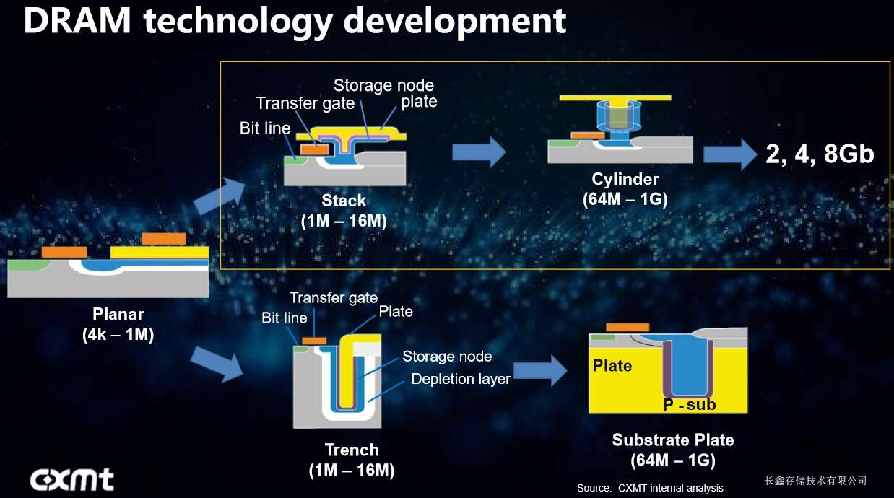
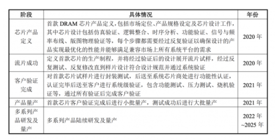
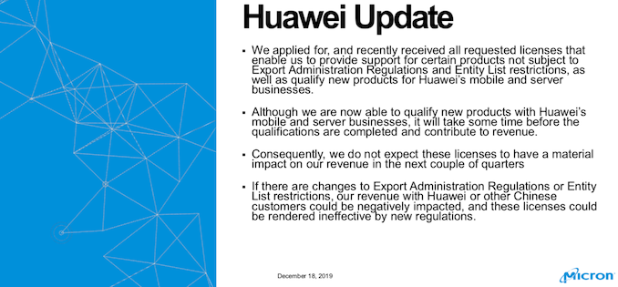
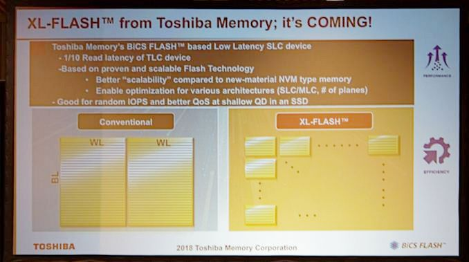
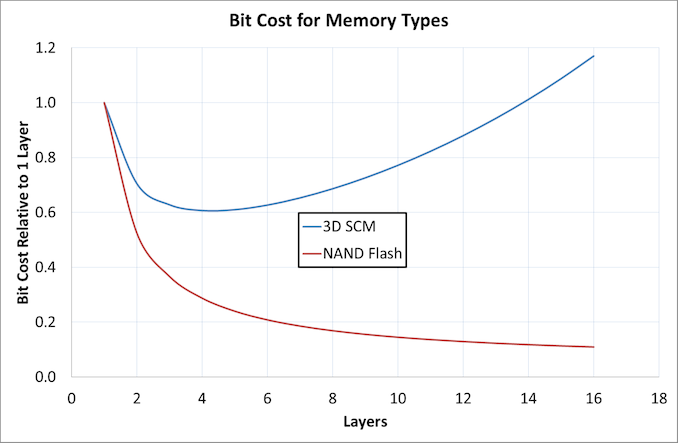

Breaking News
1. Samsung Electronics chip output at South Korea plant partly halted due to short blackout (Reuters 2020-01-01)
Samsung Electronics (005930.KS) partly halted some semiconductor production at its Hwaseong chip complex in South Korea after about a minute-long blackout on Tuesday afternoon, the company said on Wednesday.
Some DRAM and NAND flash chip production lines were stopped after electricity was cut due to a problem with a regional power transmission cable, and a full recovery is expected in about two to three days, Yonhap reported earlier on Tuesday, citing industry sources.
…………
The incident likely caused millions of dollars in losses, a source with direct knowledge of the matter said, but added that there was no major damage. The source declined to be identified as the exact extent of the damage was not yet public.
…………
The incident could help curb the increase of Samsung Electronics’ large chip inventory, Yonhap said, citing an analyst.
2. 南韓三星華城廠區驚傳跳電，將影響 DRAM、NAND Flash 及LSI部分業務 (财经新报 2020-01-01)
就在大家歡喜慶祝 2020 年元旦之際，南韓的半導體產業卻傳來了意外事件！根據外電的報導，南韓半導體廠商三星電子旗下位於華城的工廠發生了跳電事故，影響了DRAM、NAND Flash，以及採用EUV技術的系統半導體生產部分。
根據 外電報導指出，三星電子位於南韓華城的工廠，在 2019 年 12 月 31 日發生了短暫的跳電情況，使得華城廠區內的部分工廠短暫停產。整個跳電的時間約1分鐘，之後立即恢復了供電，目前三星正在積極的進行產線檢查，在了解受損程度之後，以便在最短時間內恢復生產。
據了解，這次三星電子華城廠區的跳電事件，影響的是生產DRAM的Line 12產線，以及生產Nand Flash的Line 13產線，另外還有以EUV（extreme ultraviolet）技術進行生產的LSI（large-scale integration）部分。根據市場人士估計，由於是生產DRAM的Line 12產線，以及生產NAND Flash的Line 13產線都屬於製程比較落後的產線，因此受影響較大的部分的將會是在以EUV來生產系統半導體的領域，整體損失金額可能達到3,000萬美元。
…………
這次南韓三星華城廠區在無發生重大天然災害情況下，卻發生跳電的情況，這個過程就必須好好地確認
Market Trends
1. As Spot Prices See Sharp Upturn, 1Q20 DRAM Contract Prices Stop Falling, Says TrendForce（TrendForce 2019-12-16)
According to the latest analysis of TrendForce’s DRAMeXchange research division, DRAM spot prices have begun to rebound, in turn improving the overall DRAM market sentiment, and memory component buyers in the contract market will be induced to raise their inventories as well. Contract prices are expected to rally as early as 1Q20.
…………
TrendForce’s latest updates to its 1Q20 price forecast are as follows: contract prices of PC DRAM, specialty DRAM, and mobile DRAM products will experience minor QoQ drops, while contract prices of server DRAM products will register a QoQ increase. With the anticipated cyclical upturn in prices first occurring in the server DRAM segment, the overall DRAM ASP may also hold steady at about the same level as in 4Q19.
…………
Looking ahead to 1Q20, because of existing instabilities in the supply of products built on 1Xnm processes, as well as fairly robust short-term demands, server DRAM ASP is expected to rally, with a 5% increase QoQ .
…………
Furthermore, GPU makers are shifting their demand to next-generation GDDR6 products. With the demand side anticipating rising quotes in the future, contract prices of Graphics DRAM products are projected to post a mino QoQ increase.
集邦咨询：现货价格急涨，带动DRAM合约价提前于2020年第一季止跌（TrendForce 2019-12-16)
根据集邦咨询半导体研究中心(DRAMeXchange)最新调查，DRAM现货价的翻扬，改变了市场氛围。在预期性心理因素下，有利于合约市场中买方的备货意愿提高，目前预估合约价可能提前至2020第一季止跌。
…………
然而，受到目前现货报价大涨的激励，以及服务器内存1X纳米制程的生产状况普遍不顺畅，影响了整体供货量，因此集邦咨询对2020年价格预测进行修正，2020年第一季时，虽然标准型内存、利基型内存与行动式内存价格预估仍较前一季小幅下跌，但服务器内存有机会率先领涨，带动整体DRAM平均销售单价较前一季持平。
根据集邦咨询观察，目前主流服务器内存模组成交量已经明显大幅增加，均价欲跌不易，服务器业者在DRAM备货的态度转趋积极。展望2020年第一季，由于1X纳米产品供货不顺影响持续，加上短期需求面展望强劲，预估服务器内存单价将正式反弹，季增幅约5%。
除了服务器内存以外，集邦咨询也同时调整图形处理内存的价格预测；图形处理内存尤其是GDDR5，因为主要GPU芯片供应商库存已经调整完毕，目前已恢复采购力道，加上最新一代的GDDR6需求也持续增加，在买方预期涨价心理影响下，整体价格也将于第一季小幅上调。
2. As Supply Adjustments Struggle to Keep Up with Demand Growth, 1Q20 Graphics DRAM Price Sees Sharp Upturn (TrendForce 2019-12-26)
……
Graphics DRAM prices will see a corresponding sharp rebound. Graphics DRAM is more sensitive to demand change than other types of memory products, so its price fluctuations can be dramatic as well. With OEM clients raising their stock-up demand, Graphics DRAM contract prices are projected to increase by over 5% QoQ**, the highest among all memory products.
…………
The memory capacity of these upcoming consoles could be raised up to 16GB, which is twice that of current mainstream graphics cards. Given these developments, demand is expected to exceed supply for graphics DRAM in 2020.
…………
Currently, Graphics DRAM accounts for less than 6% of the industry’s overall output. Owing to a constrained supply and the abovementioned demand drivers, quotes are starting to stabilize. Because suppliers will not be able to make quick enough adjustments in their product mixes to immediately meet the rising demand, TrendForce forecasts a sharp rebound in the contract prices of Graphics DRAM in 2020**, which will register perhaps the largest increase among products for different memory applications.
…………
集邦咨询：供给调整速度不及需求成长，2020年第一季显卡内存价格快速翻涨(TrendForce 2019-12-26)
根据集邦咨询半导体研究中心(DRAMeXchange)最新调查，2020年第一季除了因1X纳米良率问题导致供货不及，使得服务器内存价格领涨以外，显卡内存价格也快速反转向上。由于显卡内存相较于其他产品类别，属于价格波动明显的浅碟市场，因此在买方积极拉货下，预期价格将较前一季上涨逾5%，涨幅为所有产品中最高。
……
供给方面，相较其他产品别，显卡内存的单颗芯片生产成本最高，因此在历经过去几季DRAM价格快速下滑之后，显卡内存出现亏损较其他产品来的快。因此，三大DRAM原厂纷纷将产能转向其他获利能力较好的类别。截至目前，显卡内存占DRAM总产出的比重低于6%，在供给有限又面临需求增温的情况下，报价止跌回稳。由于原厂的产能调整无法快速反应，集邦咨询预期价格将会在2020年强劲反弹，而且可能成为涨幅最大的DRAM产品类别。
三大原厂在显卡内存领域的竞争态势，三星处于领先地位，不仅市占最高，在GDDR6的设计与产品验证的进度也最快。SK海力士与美光半导体的市占大约在伯仲之间，但在最新一代GDDR6产品的开发上，美光即将进入量产阶段，快过SK海力士，因此在2020年有望拉开与**SK**海力士的差距。
集邦咨询预估，在2020下半年游戏机新机种将搭载高容量GDDR6以及价格反弹的刺激下，原厂会逐渐将产能转回生产显卡内存，使得明年位元产出年成长量有机会突破15%，增幅位居第二，仅次于服务器内存。
3. 中日半导体产业合作大有可为 (中国电子报 2019-12-06)
日前，有关松下电器退出半导体行业的消息引发业界广泛关注。中国正大力发展半导体产业，与日本有着很强的互补性。因此，客观认识日本半导体发展实际，探索加强中日合作，将会实现双赢。
………
虽然日本在芯片设计领域特别是存储器方面出现大幅衰退，但在材料设备及部分细分市场依然具有优势。精细化工是日本发展半导体级材料的基础，至今依然保持优势。目前，日本企业在全球半导体材料市场的整体市场份额达到52%，在硅片、光刻胶、掩膜版、导电黏胶、塑封料、引线框架等关键材料领域具有明显优势，拥有信越、三菱住友、JSR、日立化成、京瓷等全球半导体材料顶级供应商。
…………
中国市场对于日本半导体产品有着大量的需求。中国是全球最大、成长最快的集成电路市场。根据HIS的数据，预计到2020年，中国会用掉47%左右的半导体产品。而中国国内的半导体产业又相对弱小，对日本的材料设备以及芯片产品都有着很大的需求。
此外，中日半导体人才交流合作空间巨大。由于前期发展不足，目前中国半导体人才缺口很大。而日本半导体发展时间较长，产业成熟，人才基数大。加强中日半导体人才合作交流对双方来说非常有益。日前，紫光集团邀请前尔必达社长坂本幸雄出任集团高级副总裁兼日本分公司执行长。坂本幸雄计划，将在日本神奈川县设立“设计中心”，预定招募70~100位工程师。这一做法，对于中日半导体人才合作是一个新的探索。希望中日半导体产业界加强合作互动，从市场、人才着手，逐渐向技术、产业等更高层次深入，未来将大有可为。
Vendor News
1. ChangXin Emerging as China’s First & Only DRAM Maker(EE Times 2019-12-03)
In an exclusive interview with EE Times , representatives of ChangXin Memory (formerly known as Innotron Memory) said the company has completed its Fab 1 and R&D facility in Hefei, the capital of Anhui province, and is currently running 20,000 wafers per month. It is scheduled to double its capacity to 40,000 wafers per month in the second quarter of 2020. Using a 19-nm process technology, ChangXin has begun producing this fall LPDDR4, DDR4 8Gbit DRAM products.
…………
ChangXin acknowledged that it’s been recruiting engineers from Korea and Taiwan to build its fundamental DRAM knowledge. It has also hired technical staff formerly at Qimonda. These recruits include Karl Heinz Kuesters, who signed on as a “consultant.”
…………

2. 兆易创新：首款DRAM芯片最晚2025年量产(cnBeta 2019-12-30)
此前，兆易创新发布非公开发行A股股票预案，公司拟向不超过10名特定投资者非公开发行股票不超过64,224,315股（含本数），募集资金总额（含发行费用）不超过人民币432,402.36万元，用于DRAM芯片研发及产业化以及补充流动资金。近日，兆易创新在此次非公开发行A股股票申请文件的反馈意见的回复中，透露了具体规划。

表中可知，兆易创新DRAM芯片2021年完成客户验证，最晚将于2025年量产。
兆易创新披露，公司Flash芯片的下游客户与DRAM芯片的下游客户重合度较高。
对首款芯片试样片进行封装测试，后送至系统芯片商处进行功能性认证，认证完毕后送至客户进行系统级验证，包含功能测试、压力测试、烧机验证等，通过所有验证后完成客户验证，验证完成后进行小批量产，实施时间预计在2021年。
另外，兆易创新表示，公司拟通过本项目，研发1Xnm级（19nm、17nm）工艺制程下的DRAM技术，设计和开发DDR3、LPDDR3、DDR4、LPDDR4系列DRAM芯片。本项目的成功实施，有助于公司丰富自身产品线，有效整合产业资源，巩固并提高公司的市场地位和综合竞争力。
3. Micron Obtains License to Sell DRAM & NAND to Huawei (ANADNTECH 2019-12-19)
…………
We saw Huawei’s notebooks recently come back to the Microsoft store, and yesterday during an call, Micron announced it is one of the first U.S. companies to recently obtain the required licenses, and they can resume selling various types of products to Huawei.
Because of the Export Administration Regulations and Entity List restrictions imposed on Huawei, companies that develop and make products in the U.S. could no longer sell them to Huawei. As a consequence, companies like Intel, Google, Microsoft, Micron, and many others had to stop working with their Chinese partner, which had a drastic impact on their business as the Chinese telecom giant is clearly a major customer buying a large number of hardware and software products.

Micron was allowed to sell and support some of its products to Huawei, but it was forbidden to supply Huawei with new products or sign new sales agreements. In the recent weeks the company obtained a license from the U.S. administration to qualify and sell new products (e.g., DRAM modules/chips, SSDs, 3D NAND memory, etc.) with Huawei’s mobile and server business units. Meanwhile, since new sales agreements take months to complete, Micron does not expect the licenses to have an impact on its sales in upcoming quarters.
New Technology
1. 铠侠看淡3D XPoint前景 闪存仍将长期主导 (cnBeta 2019-12-31)
未来十年，存储市场仍将继续追求存储的密度、速度和需求的平衡点。尽管各个厂家的技术侧重点不尽相同，但铠侠（原东芝存储器）对3D XPoint之类的堆叠类存储方案的前景并不看好。在今年的国际电子设备会议（IEDM）上，该公司宣布了 BiCS 闪存系列和即将推出的 XL-Flash 技术，并且附上了一份展现未来愿景的幻灯片。
动态随机存储器（DRAM）、闪存（Flash）和“存储级内存”（SCM），是当前市面上的三大发展方向，铠侠也对英特尔和美光的 3D XPoint 长期愿景进行了展望。

…………
3D 堆叠式存储单元的工作方式与闪存有所不同，以 3D XPoint 为例，其使用相变材料来改变存储单元的电阻，并可以通过电子选择器开关进行访问。
通过交替改变字线和位线的方向来构建存储器，以保留 SCM 的比特位可寻址特性。如需堆叠更多的层数，也只需添加额外的字线和位线，以及其间的单元。
即便如此，铠侠仍不看好3D XPoint的前景。首先是相对于层数的每比特位成本，层数的增加会带来更高的复杂性，控制电路会损失一部分面积，产能损失的影响也更大。
